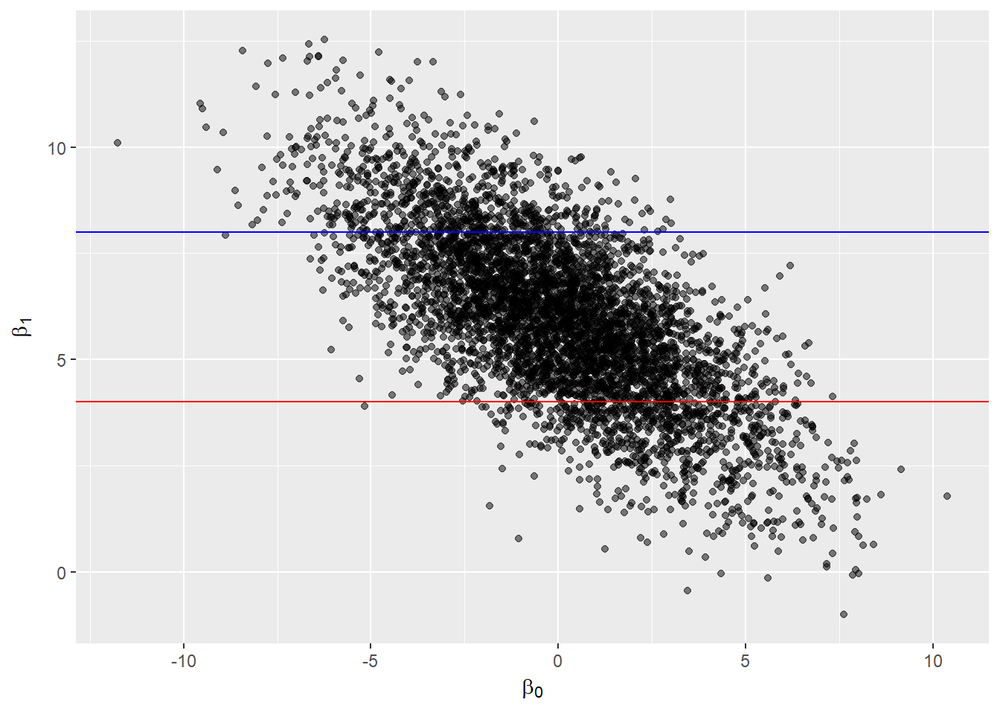
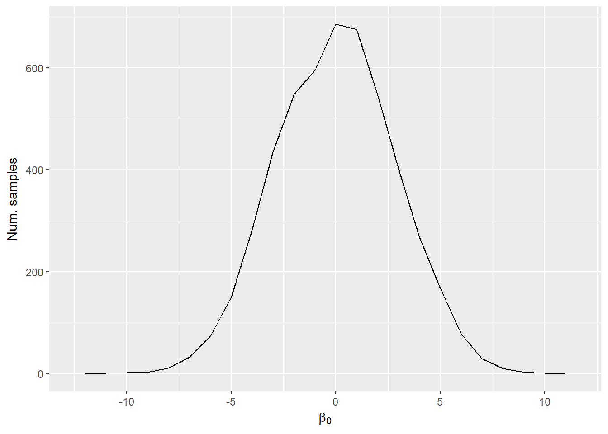
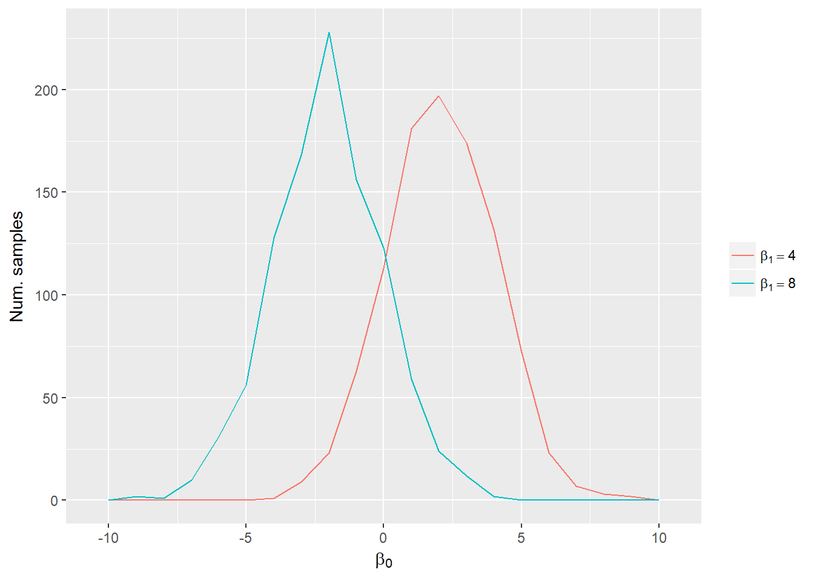
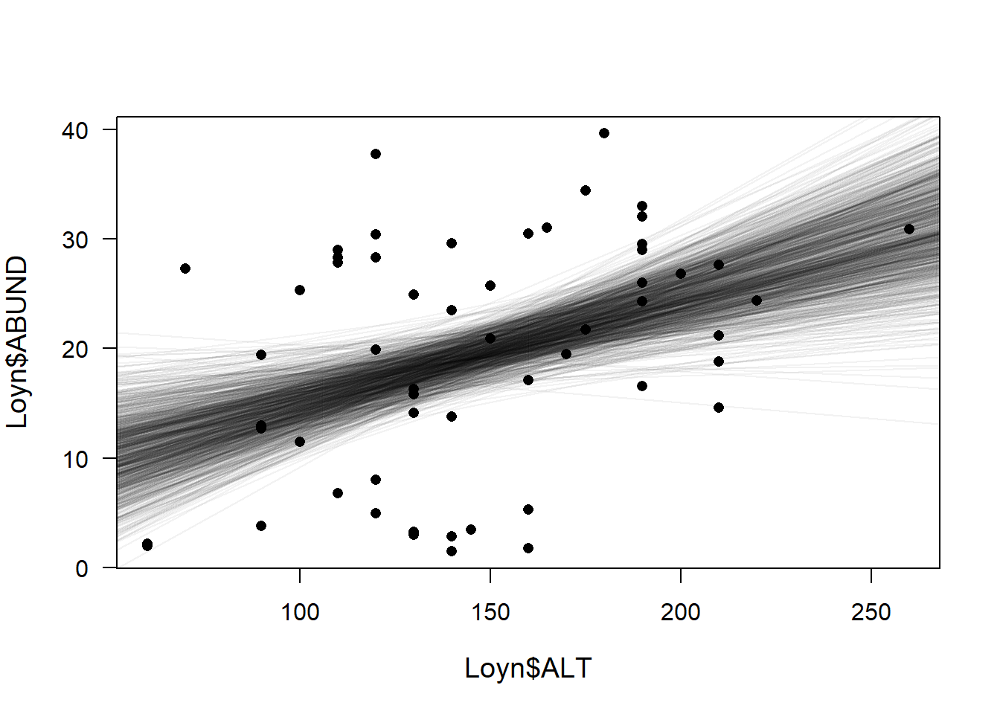
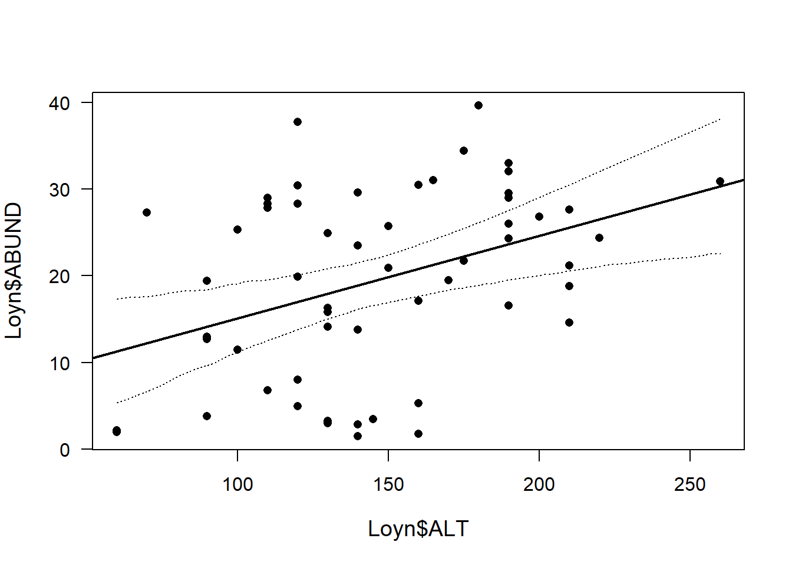
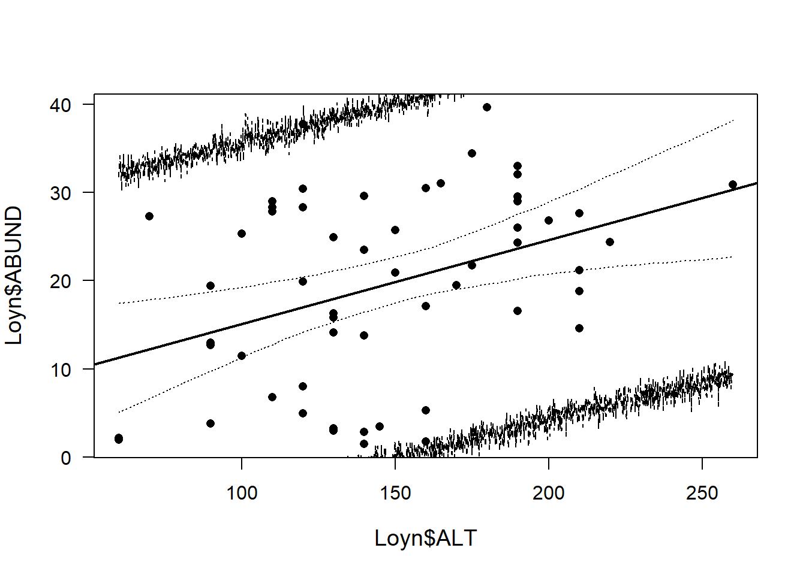

Assigned Reading:
Chapters 3, 4.1, 8.4, 9.2, in Korner-Nievergelt et al. 2015. Bayesian data analysis in ecology using linear models with R, BUGS, and Stan. Elsevier. link
* These chapters use the same functions you have already seen. Read the assigned sections focusing on how we make Bayesian inferences from models fit with these functions.
Optional Reading:
Chapters 5, 4.2, 8, 9, in Korner-Nievergelt et al. 2015. Bayesian data analysis in ecology using linear models with R, BUGS, and Stan. Elsevier. link
* Chapter 4.2 focuses on ANOVA-type models while the rest of chapters 8 and 9 focus on Binomial and Binary models.
Differences between Frequentist and Bayesian approach to statistical inference:
See Table 3.1 in the reading.
| Bayesian | Frequentist |
|---|---|
| Make probabalistic statements about our state of knowledge. | Ask how parameter estimates change if data collected many times. |
| Calculate probability of hypothesis, given observed data. | Calculate probability of data, given null hypothesis. |
| Likelihood is a function that calculates probability for any set of data and parameters. | Likelihood is a value- the probability of the observed set of data, given a specific model and estimated parameters. |
| Inference based on samples of parameters from the posterior distribution. | Inference based on null hypothesis tests on values of estimated parameters and their SE. |
Bayesian approach to statistical inference:
If \(\theta\) is a model and \(y\) is observed data, then frequentists estimate \(P(y|\theta)\) and Bayesians estimate \(P(\theta|y)\). Bayesians use:
\[p(\theta|y) = \frac{p(y|\theta) p(\theta)}{p(y)}\]
\(p(\theta|y)\) is the posterior distibution, \(p(\theta)\) is our prior information about what values the parameters can take, and \(p(y|\theta)\) is the likelihood function that gives the probability of an observed data point given a set of parameter values and a model.
Development of algorithms that sample from posterior \(p(\theta|y)\) without knowing the prior probability of the data \(p(y) = \int p(y|\theta)p(\theta) d\theta\) have made Bayesian inference accessible.
Joint posterior distribution of \(\beta_0\) and \(\beta_1\): 
Marginal distribution of \(\beta_0\): 
Conditional distribution of \(\beta_0\) when \(\beta_1 = 4\) (red line) or \(\beta_1 = 8\) (blue line).

Inference is based on visualizing and summarizing the posterior distributions of parameters, predicted future observations, and quantities calculated from parameters.
quantile())HPDinterval(as.mcmc()), both functions from coda package).Bayesians use log pointwise predictive density to estimate model fit, which is analogous to the log-likelihood in Frequentist inference (see Chapter 5 and 11.2 in Korner-Nievergelt et al. 2015). For each observed outcome, it calculates the average probability of observing that outcome across all of the samples from the posterior, then adds together the ln of these probabilities.
Before drawing conclusions, make sure to assess the model assumptions and validate the model by looking at the residual deviance and plotting residuals.
Model notation
To use Bayesian methods you should learn how to write down your model using matrix notation. Practice doing this with every model you fit and identifying what the columns and rows are in each matrix. Doing so will make it easier to write your own models in BUGS or Stan, which will be necessary for fitting more complex models.
\[\mathbf{y} \sim Pois(\boldsymbol{\hat{\lambda}})\\ log(\boldsymbol{\hat{\lambda}}) = \mathbf{X}\boldsymbol{\hat{\beta}}\]
\(\mathbf{y}\) is a vector of observations (of counts) with length \(n\).
\(\boldsymbol{\hat{\lambda}}\) is a vector of the estimated mean for each observation (has length \(n\)).
\(\mathbf{X}\) is a matrix with \(n\) rows and \(p\) columns with the observed values of the \(p - 1\) covariates in each of the rows. (Note that we have an initial column of all \(1\) to estimate the mean.)
\(\boldsymbol{\hat{\beta}}\) is a vector of the parameters to be estimated with length \(p\).
Bayesian inference in R
sim() function from arm package to simulate samples from the posterior for models fit with lm(), glm(), glmer().sim() assumes uniform (flat) prior distributions on all parameters, calculates the posterior distribution analytically, then generates random samples from this distribution.model.matrix() makes it easy to create design matrices for calculating fitted values (\(\hat{y}\)) from samples of parameters.apply() function to summarize the matrix of parameter samples returned by sim(model, n.sim)@coef. apply(matrix, 1, fun) applies a function fun to the rows of the matrix whereas apply(matrix, 2, fun) applies the function to the columns.%*% to do matrix multiplication to calculate \(\hat{y}\) from samples of parameters and values of covariates.Let’s use the data from Appendix A of the Zuur book, where we are looking at the density of birds within 56 forest patches. ABUND= the density of birds in a forest patch (continuous response variable), ALT= mean altitude of the patch (continuous explanatory variable). We want to know how mean altitude of the forest patch influences the number of birds within the patch. This code comes from Chapter 3 and Chapter 4.1 in Korner-Nievergelt et al. 2015. *Bayesian data analysis in ecology using linear models with R, BUGS, and Stan.
Remember you could use any linear model from lm() glm() or glmer() but we are going to use a lm() example.
# clear your environment
rm(list=ls())
# read in the data
#Loyn<- read.table(file = "/Users/jamiemcdevitt-irwin/Dropbox/Jamie/Stanford/3_Courses/Biol202/Week3_linearmodels_intro/ZuurDataMixedModelling/Loyn.txt", header = TRUE, dec = ".")
Loyn <- read.table("data/Loyn.txt", header = TRUE)
# let's take a quick look at the data
head(Loyn)## Site ABUND AREA DIST LDIST YR.ISOL GRAZE ALT
## 1 1 5.3 0.1 39 39 1968 2 160
## 2 2 2.0 0.5 234 234 1920 5 60
## 3 3 1.5 0.5 104 311 1900 5 140
## 4 4 17.1 1.0 66 66 1966 3 160
## 5 5 13.8 1.0 246 246 1918 5 140
## 6 6 14.1 1.0 234 285 1965 3 130# run a linear regression with just one of the explanatory variables: ALT
M1 <- lm(ABUND ~ ALT, data = Loyn) # least squares fit
summary(M1)##
## Call:
## lm(formula = ABUND ~ ALT, data = Loyn)
##
## Residuals:
## Min 1Q Median 3Q Max
## -19.0226 -7.5620 0.0062 8.5728 20.6834
##
## Coefficients:
## Estimate Std. Error t value Pr(>|t|)
## (Intercept) 5.59834 4.72092 1.186 0.24087
## ALT 0.09515 0.03096 3.073 0.00332 **
## ---
## Signif. codes: 0 '***' 0.001 '**' 0.01 '*' 0.05 '.' 0.1 ' ' 1
##
## Residual standard error: 9.995 on 54 degrees of freedom
## Multiple R-squared: 0.1489, Adjusted R-squared: 0.1331
## F-statistic: 9.445 on 1 and 54 DF, p-value: 0.003316summary(M1)$sigma # pull out the residual standard error ## [1] 9.994817To get an idea of how sim() draws upon our model, let’s first write out this model fully.
Random
\(ABUND_i \sim N(\hat{ABUND_i}, \hat{sigma})\)
Deterministic
\(\hat{ABUND_i} = \hat{beta_0} + \hat{beta_1} * ALT_i\)
Now lets use sim() in the package ‘arm’ on the model we produced ‘M1’. Sim() draws a random value from the marginal posterior distribution of sigma and then draws random values from the conditional posterior distribution of \(\beta\) (i.e. the parameters in the model, in our case the intercept and slope for ALT). These posterior distributions describe the range of plausible parameter values given the data and the model. They express our uncertainty about the model parameters.
#install.packages('arm')
library(arm)## Loading required package: Matrix##
## Attaching package: 'Matrix'## The following object is masked from 'package:tidyr':
##
## expand## Loading required package: lme4##
## Attaching package: 'lme4'## The following object is masked from 'package:nlme':
##
## lmList##
## arm (Version 1.9-3, built: 2016-11-21)## Working directory is C:/Users/jrcoyle/Documents/Stanford/BIO202/GitHub##
## Attaching package: 'arm'## The following object is masked from 'package:car':
##
## logitnsim <-1000 # number of simulations can be changed to whatever you want
bsim <- sim(M1, n.sim=nsim)
str(bsim)## Formal class 'sim' [package "arm"] with 2 slots
## ..@ coef : num [1:1000, 1:2] 4.22 6.67 8.6 2.58 6.29 ...
## .. ..- attr(*, "dimnames")=List of 2
## .. .. ..$ : NULL
## .. .. ..$ : chr [1:2] "(Intercept)" "ALT"
## ..@ sigma: num [1:1000] 11.18 10.82 10.12 10.28 8.67 ...sim() produces an object of class sim that contains “coef” (1000 simulated values for theta, i.e. your parameters) and “sigma” containing the 1000 values for SD
apply(coef(bsim), 2, quantile, prob=c(0.025, 0.975)) # parameters## (Intercept) ALT
## 2.5% -4.289248 0.02918328
## 97.5% 15.312500 0.15793703quantile(bsim@sigma, prob=c(0.025, 0.975)) # sigma## 2.5% 97.5%
## 8.372159 12.366565H1.
H2. How sure are we that the slope parameter for ALT is larger than .05, .1, .2?
set.seed(100) # before you run the sim function
sum(coef(bsim)[,2]>.05)/nsim # 93% confident that the slope is greater than .05## [1] 0.92sum(coef(bsim)[,2]>.1)/nsim # 44% confident that the slope is greater than .1## [1] 0.449sum(coef(bsim)[,2]>.2)/nsim # 0.1% confident that the slope is greater than .2## [1] 0We use simulated values from the posterior distribution of model parameters. The simulation of the posterior distribution gives 1000 pairs of intercepts and slopes that describe 1000 different regression lines. We then draw these lines to show the uncertainty in our regression line estimation
plot(Loyn$ALT, Loyn$ABUND, pch=16, las=1, cex.lab=1.2)
for(i in 1:nsim) abline(coef(bsim)[i,1], coef(bsim)[i,2], col=rgb(0,0,0,0.05)) # add semitransparent regression lines
So the above plot shows you the 1000 possible regression lines that were simulated from the sim() function. The points on the plot are the original values of ABUND vs ALT
95% CrI’s: credible interval within which we expect the true parameter value to be with a probability of 0.95
# first we must define new x-values for which we could like to make fitted values
# find the max and min of ALT
min(Loyn$ALT) # 60## [1] 60max(Loyn$ALT) # 260## [1] 260# now save these x-values because we want to then predict values past these
newdat <- data.frame(ALT=seq(60, 260, by=0.1))
head(newdat)## ALT
## 1 60.0
## 2 60.1
## 3 60.2
## 4 60.3
## 5 60.4
## 6 60.5newmodmat <- model.matrix(~ALT, data=newdat) # create a matrix that contains these new x-values
head(newmodmat)## (Intercept) ALT
## 1 1 60.0
## 2 1 60.1
## 3 1 60.2
## 4 1 60.3
## 5 1 60.4
## 6 1 60.5dim(newmodmat)## [1] 2001 2fitmat <- matrix(ncol=nsim, nrow=nrow(newdat)) # then calculate the 1000 fitted values for each new x value using matrix multiplication
head(fitmat)## [,1] [,2] [,3] [,4] [,5] [,6] [,7] [,8] [,9] [,10] [,11] [,12] [,13]
## [1,] NA NA NA NA NA NA NA NA NA NA NA NA NA
## [,14] [,15] [,16] [,17] [,18] [,19] [,20] [,21] [,22] [,23] [,24]
## [1,] NA NA NA NA NA NA NA NA NA NA NA
## [,25] [,26] [,27] [,28] [,29] [,30] [,31] [,32] [,33] [,34] [,35]
## [1,] NA NA NA NA NA NA NA NA NA NA NA
## [,36] [,37] [,38] [,39] [,40] [,41] [,42] [,43] [,44] [,45] [,46]
## [1,] NA NA NA NA NA NA NA NA NA NA NA
## [,47] [,48] [,49] [,50] [,51] [,52] [,53] [,54] [,55] [,56] [,57]
## [1,] NA NA NA NA NA NA NA NA NA NA NA
## [,58] [,59] [,60] [,61] [,62] [,63] [,64] [,65] [,66] [,67] [,68]
## [1,] NA NA NA NA NA NA NA NA NA NA NA
## [,69] [,70] [,71] [,72] [,73] [,74] [,75] [,76] [,77] [,78] [,79]
## [1,] NA NA NA NA NA NA NA NA NA NA NA
## [,80] [,81] [,82] [,83] [,84] [,85] [,86] [,87] [,88] [,89] [,90]
## [1,] NA NA NA NA NA NA NA NA NA NA NA
## [,91] [,92] [,93] [,94] [,95] [,96] [,97] [,98] [,99] [,100] [,101]
## [1,] NA NA NA NA NA NA NA NA NA NA NA
## [,102] [,103] [,104] [,105] [,106] [,107] [,108] [,109] [,110] [,111]
## [1,] NA NA NA NA NA NA NA NA NA NA
## [,112] [,113] [,114] [,115] [,116] [,117] [,118] [,119] [,120] [,121]
## [1,] NA NA NA NA NA NA NA NA NA NA
## [,122] [,123] [,124] [,125] [,126] [,127] [,128] [,129] [,130] [,131]
## [1,] NA NA NA NA NA NA NA NA NA NA
## [,132] [,133] [,134] [,135] [,136] [,137] [,138] [,139] [,140] [,141]
## [1,] NA NA NA NA NA NA NA NA NA NA
## [,142] [,143] [,144] [,145] [,146] [,147] [,148] [,149] [,150] [,151]
## [1,] NA NA NA NA NA NA NA NA NA NA
## [,152] [,153] [,154] [,155] [,156] [,157] [,158] [,159] [,160] [,161]
## [1,] NA NA NA NA NA NA NA NA NA NA
## [,162] [,163] [,164] [,165] [,166] [,167] [,168] [,169] [,170] [,171]
## [1,] NA NA NA NA NA NA NA NA NA NA
## [,172] [,173] [,174] [,175] [,176] [,177] [,178] [,179] [,180] [,181]
## [1,] NA NA NA NA NA NA NA NA NA NA
## [,182] [,183] [,184] [,185] [,186] [,187] [,188] [,189] [,190] [,191]
## [1,] NA NA NA NA NA NA NA NA NA NA
## [,192] [,193] [,194] [,195] [,196] [,197] [,198] [,199] [,200] [,201]
## [1,] NA NA NA NA NA NA NA NA NA NA
## [,202] [,203] [,204] [,205] [,206] [,207] [,208] [,209] [,210] [,211]
## [1,] NA NA NA NA NA NA NA NA NA NA
## [,212] [,213] [,214] [,215] [,216] [,217] [,218] [,219] [,220] [,221]
## [1,] NA NA NA NA NA NA NA NA NA NA
## [,222] [,223] [,224] [,225] [,226] [,227] [,228] [,229] [,230] [,231]
## [1,] NA NA NA NA NA NA NA NA NA NA
## [,232] [,233] [,234] [,235] [,236] [,237] [,238] [,239] [,240] [,241]
## [1,] NA NA NA NA NA NA NA NA NA NA
## [,242] [,243] [,244] [,245] [,246] [,247] [,248] [,249] [,250] [,251]
## [1,] NA NA NA NA NA NA NA NA NA NA
## [,252] [,253] [,254] [,255] [,256] [,257] [,258] [,259] [,260] [,261]
## [1,] NA NA NA NA NA NA NA NA NA NA
## [,262] [,263] [,264] [,265] [,266] [,267] [,268] [,269] [,270] [,271]
## [1,] NA NA NA NA NA NA NA NA NA NA
## [,272] [,273] [,274] [,275] [,276] [,277] [,278] [,279] [,280] [,281]
## [1,] NA NA NA NA NA NA NA NA NA NA
## [,282] [,283] [,284] [,285] [,286] [,287] [,288] [,289] [,290] [,291]
## [1,] NA NA NA NA NA NA NA NA NA NA
## [,292] [,293] [,294] [,295] [,296] [,297] [,298] [,299] [,300] [,301]
## [1,] NA NA NA NA NA NA NA NA NA NA
## [,302] [,303] [,304] [,305] [,306] [,307] [,308] [,309] [,310] [,311]
## [1,] NA NA NA NA NA NA NA NA NA NA
## [,312] [,313] [,314] [,315] [,316] [,317] [,318] [,319] [,320] [,321]
## [1,] NA NA NA NA NA NA NA NA NA NA
## [,322] [,323] [,324] [,325] [,326] [,327] [,328] [,329] [,330] [,331]
## [1,] NA NA NA NA NA NA NA NA NA NA
## [,332] [,333] [,334] [,335] [,336] [,337] [,338] [,339] [,340] [,341]
## [1,] NA NA NA NA NA NA NA NA NA NA
## [,342] [,343] [,344] [,345] [,346] [,347] [,348] [,349] [,350] [,351]
## [1,] NA NA NA NA NA NA NA NA NA NA
## [,352] [,353] [,354] [,355] [,356] [,357] [,358] [,359] [,360] [,361]
## [1,] NA NA NA NA NA NA NA NA NA NA
## [,362] [,363] [,364] [,365] [,366] [,367] [,368] [,369] [,370] [,371]
## [1,] NA NA NA NA NA NA NA NA NA NA
## [,372] [,373] [,374] [,375] [,376] [,377] [,378] [,379] [,380] [,381]
## [1,] NA NA NA NA NA NA NA NA NA NA
## [,382] [,383] [,384] [,385] [,386] [,387] [,388] [,389] [,390] [,391]
## [1,] NA NA NA NA NA NA NA NA NA NA
## [,392] [,393] [,394] [,395] [,396] [,397] [,398] [,399] [,400] [,401]
## [1,] NA NA NA NA NA NA NA NA NA NA
## [,402] [,403] [,404] [,405] [,406] [,407] [,408] [,409] [,410] [,411]
## [1,] NA NA NA NA NA NA NA NA NA NA
## [,412] [,413] [,414] [,415] [,416] [,417] [,418] [,419] [,420] [,421]
## [1,] NA NA NA NA NA NA NA NA NA NA
## [,422] [,423] [,424] [,425] [,426] [,427] [,428] [,429] [,430] [,431]
## [1,] NA NA NA NA NA NA NA NA NA NA
## [,432] [,433] [,434] [,435] [,436] [,437] [,438] [,439] [,440] [,441]
## [1,] NA NA NA NA NA NA NA NA NA NA
## [,442] [,443] [,444] [,445] [,446] [,447] [,448] [,449] [,450] [,451]
## [1,] NA NA NA NA NA NA NA NA NA NA
## [,452] [,453] [,454] [,455] [,456] [,457] [,458] [,459] [,460] [,461]
## [1,] NA NA NA NA NA NA NA NA NA NA
## [,462] [,463] [,464] [,465] [,466] [,467] [,468] [,469] [,470] [,471]
## [1,] NA NA NA NA NA NA NA NA NA NA
## [,472] [,473] [,474] [,475] [,476] [,477] [,478] [,479] [,480] [,481]
## [1,] NA NA NA NA NA NA NA NA NA NA
## [,482] [,483] [,484] [,485] [,486] [,487] [,488] [,489] [,490] [,491]
## [1,] NA NA NA NA NA NA NA NA NA NA
## [,492] [,493] [,494] [,495] [,496] [,497] [,498] [,499] [,500] [,501]
## [1,] NA NA NA NA NA NA NA NA NA NA
## [,502] [,503] [,504] [,505] [,506] [,507] [,508] [,509] [,510] [,511]
## [1,] NA NA NA NA NA NA NA NA NA NA
## [,512] [,513] [,514] [,515] [,516] [,517] [,518] [,519] [,520] [,521]
## [1,] NA NA NA NA NA NA NA NA NA NA
## [,522] [,523] [,524] [,525] [,526] [,527] [,528] [,529] [,530] [,531]
## [1,] NA NA NA NA NA NA NA NA NA NA
## [,532] [,533] [,534] [,535] [,536] [,537] [,538] [,539] [,540] [,541]
## [1,] NA NA NA NA NA NA NA NA NA NA
## [,542] [,543] [,544] [,545] [,546] [,547] [,548] [,549] [,550] [,551]
## [1,] NA NA NA NA NA NA NA NA NA NA
## [,552] [,553] [,554] [,555] [,556] [,557] [,558] [,559] [,560] [,561]
## [1,] NA NA NA NA NA NA NA NA NA NA
## [,562] [,563] [,564] [,565] [,566] [,567] [,568] [,569] [,570] [,571]
## [1,] NA NA NA NA NA NA NA NA NA NA
## [,572] [,573] [,574] [,575] [,576] [,577] [,578] [,579] [,580] [,581]
## [1,] NA NA NA NA NA NA NA NA NA NA
## [,582] [,583] [,584] [,585] [,586] [,587] [,588] [,589] [,590] [,591]
## [1,] NA NA NA NA NA NA NA NA NA NA
## [,592] [,593] [,594] [,595] [,596] [,597] [,598] [,599] [,600] [,601]
## [1,] NA NA NA NA NA NA NA NA NA NA
## [,602] [,603] [,604] [,605] [,606] [,607] [,608] [,609] [,610] [,611]
## [1,] NA NA NA NA NA NA NA NA NA NA
## [,612] [,613] [,614] [,615] [,616] [,617] [,618] [,619] [,620] [,621]
## [1,] NA NA NA NA NA NA NA NA NA NA
## [,622] [,623] [,624] [,625] [,626] [,627] [,628] [,629] [,630] [,631]
## [1,] NA NA NA NA NA NA NA NA NA NA
## [,632] [,633] [,634] [,635] [,636] [,637] [,638] [,639] [,640] [,641]
## [1,] NA NA NA NA NA NA NA NA NA NA
## [,642] [,643] [,644] [,645] [,646] [,647] [,648] [,649] [,650] [,651]
## [1,] NA NA NA NA NA NA NA NA NA NA
## [,652] [,653] [,654] [,655] [,656] [,657] [,658] [,659] [,660] [,661]
## [1,] NA NA NA NA NA NA NA NA NA NA
## [,662] [,663] [,664] [,665] [,666] [,667] [,668] [,669] [,670] [,671]
## [1,] NA NA NA NA NA NA NA NA NA NA
## [,672] [,673] [,674] [,675] [,676] [,677] [,678] [,679] [,680] [,681]
## [1,] NA NA NA NA NA NA NA NA NA NA
## [,682] [,683] [,684] [,685] [,686] [,687] [,688] [,689] [,690] [,691]
## [1,] NA NA NA NA NA NA NA NA NA NA
## [,692] [,693] [,694] [,695] [,696] [,697] [,698] [,699] [,700] [,701]
## [1,] NA NA NA NA NA NA NA NA NA NA
## [,702] [,703] [,704] [,705] [,706] [,707] [,708] [,709] [,710] [,711]
## [1,] NA NA NA NA NA NA NA NA NA NA
## [,712] [,713] [,714] [,715] [,716] [,717] [,718] [,719] [,720] [,721]
## [1,] NA NA NA NA NA NA NA NA NA NA
## [,722] [,723] [,724] [,725] [,726] [,727] [,728] [,729] [,730] [,731]
## [1,] NA NA NA NA NA NA NA NA NA NA
## [,732] [,733] [,734] [,735] [,736] [,737] [,738] [,739] [,740] [,741]
## [1,] NA NA NA NA NA NA NA NA NA NA
## [,742] [,743] [,744] [,745] [,746] [,747] [,748] [,749] [,750] [,751]
## [1,] NA NA NA NA NA NA NA NA NA NA
## [,752] [,753] [,754] [,755] [,756] [,757] [,758] [,759] [,760] [,761]
## [1,] NA NA NA NA NA NA NA NA NA NA
## [,762] [,763] [,764] [,765] [,766] [,767] [,768] [,769] [,770] [,771]
## [1,] NA NA NA NA NA NA NA NA NA NA
## [,772] [,773] [,774] [,775] [,776] [,777] [,778] [,779] [,780] [,781]
## [1,] NA NA NA NA NA NA NA NA NA NA
## [,782] [,783] [,784] [,785] [,786] [,787] [,788] [,789] [,790] [,791]
## [1,] NA NA NA NA NA NA NA NA NA NA
## [,792] [,793] [,794] [,795] [,796] [,797] [,798] [,799] [,800] [,801]
## [1,] NA NA NA NA NA NA NA NA NA NA
## [,802] [,803] [,804] [,805] [,806] [,807] [,808] [,809] [,810] [,811]
## [1,] NA NA NA NA NA NA NA NA NA NA
## [,812] [,813] [,814] [,815] [,816] [,817] [,818] [,819] [,820] [,821]
## [1,] NA NA NA NA NA NA NA NA NA NA
## [,822] [,823] [,824] [,825] [,826] [,827] [,828] [,829] [,830] [,831]
## [1,] NA NA NA NA NA NA NA NA NA NA
## [,832] [,833] [,834] [,835] [,836] [,837] [,838] [,839] [,840] [,841]
## [1,] NA NA NA NA NA NA NA NA NA NA
## [,842] [,843] [,844] [,845] [,846] [,847] [,848] [,849] [,850] [,851]
## [1,] NA NA NA NA NA NA NA NA NA NA
## [,852] [,853] [,854] [,855] [,856] [,857] [,858] [,859] [,860] [,861]
## [1,] NA NA NA NA NA NA NA NA NA NA
## [,862] [,863] [,864] [,865] [,866] [,867] [,868] [,869] [,870] [,871]
## [1,] NA NA NA NA NA NA NA NA NA NA
## [,872] [,873] [,874] [,875] [,876] [,877] [,878] [,879] [,880] [,881]
## [1,] NA NA NA NA NA NA NA NA NA NA
## [,882] [,883] [,884] [,885] [,886] [,887] [,888] [,889] [,890] [,891]
## [1,] NA NA NA NA NA NA NA NA NA NA
## [,892] [,893] [,894] [,895] [,896] [,897] [,898] [,899] [,900] [,901]
## [1,] NA NA NA NA NA NA NA NA NA NA
## [,902] [,903] [,904] [,905] [,906] [,907] [,908] [,909] [,910] [,911]
## [1,] NA NA NA NA NA NA NA NA NA NA
## [,912] [,913] [,914] [,915] [,916] [,917] [,918] [,919] [,920] [,921]
## [1,] NA NA NA NA NA NA NA NA NA NA
## [,922] [,923] [,924] [,925] [,926] [,927] [,928] [,929] [,930] [,931]
## [1,] NA NA NA NA NA NA NA NA NA NA
## [,932] [,933] [,934] [,935] [,936] [,937] [,938] [,939] [,940] [,941]
## [1,] NA NA NA NA NA NA NA NA NA NA
## [,942] [,943] [,944] [,945] [,946] [,947] [,948] [,949] [,950] [,951]
## [1,] NA NA NA NA NA NA NA NA NA NA
## [,952] [,953] [,954] [,955] [,956] [,957] [,958] [,959] [,960] [,961]
## [1,] NA NA NA NA NA NA NA NA NA NA
## [,962] [,963] [,964] [,965] [,966] [,967] [,968] [,969] [,970] [,971]
## [1,] NA NA NA NA NA NA NA NA NA NA
## [,972] [,973] [,974] [,975] [,976] [,977] [,978] [,979] [,980] [,981]
## [1,] NA NA NA NA NA NA NA NA NA NA
## [,982] [,983] [,984] [,985] [,986] [,987] [,988] [,989] [,990] [,991]
## [1,] NA NA NA NA NA NA NA NA NA NA
## [,992] [,993] [,994] [,995] [,996] [,997] [,998] [,999] [,1000]
## [1,] NA NA NA NA NA NA NA NA NA
## [ reached getOption("max.print") -- omitted 5 rows ]dim(fitmat)## [1] 2001 1000for(i in 1:nsim) fitmat[,i] <- newmodmat %*% coef(bsim)[i,] # %*% is for matrix multiplication, recall that bsim is the object sim() produced for our model M1
# so you are multiplying the new x values created from the min and max of x by the bsim values
plot(Loyn$ALT,Loyn$ABUND, pch=16, las=1, cex.lab=1.2)
abline(M1, lw=2) # add line from our original model
lines(newdat$ALT, apply(fitmat, 1, quantile, prob=0.025), lty=3)
lines(newdat$ALT, apply(fitmat, 1, quantile, prob=0.975), lty=3) 
We are 95% sure the true regression line (black line) is within the credible interval (dotted lines)
# prepare matrix for simulated new data
newy <- matrix(ncol=nsim, nrow=nrow(newdat)) # recall newdata is the new x values we created earlier
# for each simulated fitted value (x=ALT), simulate one new y-value (y=ABUND)
for(i in 1:nsim) newy[,i] <- rnorm(nrow(newdat),mean=fitmat[,i],sd=bsim@sigma[i])
# call the plot with the 95% credible interval prior to adding the 95% interval of simulated predictive distribution
plot(Loyn$ALT,Loyn$ABUND, pch=16, las=1, cex.lab=1.2)
abline(M1, lw=2) # add line from our original model
lines(newdat$ALT, apply(fitmat, 1, quantile, prob=0.025), lty=3)
lines(newdat$ALT, apply(fitmat, 1, quantile, prob=0.975), lty=3)
# 95% interval of simulated predictive distribution
lines(newdat$ALT, apply(newy, 1, quantile, prob=0.025), lty=2)
lines(newdat$ALT, apply(newy, 1, quantile, prob=0.975), lty=2)
Thus, future observations are expected to be within the interval defined by the broken lines in the figure above with a probability of 0.95.
Note: compared to a frequentist approach (predict()), this takes a lot more code. However, when you have a simulated the posterior predictive distribution, you have more information than is contained in the frequentist prediction interval. For example, you can test hypotheses about future observations (see code below)
EX1. If ALT=60, what is the estimated proportion of observations greater than 20?
sum(newy[newdat$ALT==60,]>20)/nsim## [1] 0.192Thus we expect 20% of future observations with ALT=60 to have a density of birds greater than 20
EX2. IF ALT=120, what is the estimated proportion of observations greater than 20?
sum(newy[newdat$ALT==120,]>20)/nsim## [1] 0.401Thus we expect 39% of future observations with ALT=120 to have a density of birds greater than 20
Another reason to learn this is because once you have a more complicated model (e.g. mixed models), the frequentist methods to obtain confidence intervals of fitted values are much more complicated than the Bayesian method presented here. The code we learned here can be used for mixed models and generalized linear mixed models with minor changes.